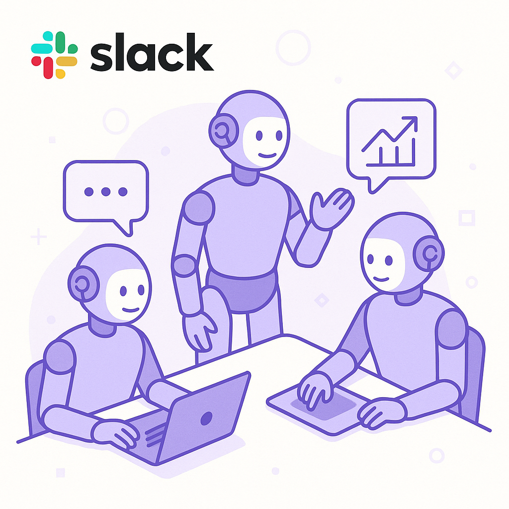

Publishing Recommendation
reviseThe drafts contain repetitive messaging and lack differentiation, especially in how Purands AI specifically benefits from each trend. Posts need clearer, unique value propositions and less generic AI claims.
Today's drafts are heavily repetitive and overly reliant on AI jargon without providing distinct insights or value propositions. Each post needs to more clearly articulate how Purands AI specifically leverages the trends discussed. Additionally, avoid broad claims about AI capabilities without concrete examples or data that support these assertions. A revision is necessary to ensure each post offers unique, actionable insights.
LinkedIn Posts (10)
1. Flipkart's quick-commerce venture approaches India's quick-commerce leaders ★ Purands solution · high priority
CTA: How do you see quick-commerce impacting your business strategy in APAC?
Alternative hooks
- Flipkart's quick-commerce surge is rewriting the rules in India.
- 90-minute delivery: Flipkart's bold move in quick-commerce.
- Quick-commerce in India is heating up, with Flipkart at the forefront.
Research behind this post (sources, summaries & confidence)
Flipkart's quick-commerce venture approaches India's quick-commerce leaders conf 0.90 · APAC commerce dynamics
Flipkart's success in quick-commerce highlights the rapid growth of mobile-first, commerce models in APAC, crucial for understanding regional dynamics in retention marketing. This trend impacts how brands in the region strategize for repeat purchases and customer engagement.
Sources & what I took from each
- Flipkart's quick-commerce venture is rapidly growing.: Flipkart has been expanding its quick-commerce services, challenging established leaders like Swiggy and Zomato. ↗ read source
- Quick-commerce is seeing significant growth in India.: The quick-commerce sector in India has been growing at a rapid pace, driven by increased consumer demand for faster delivery services. ↗ read source
Statistics
- India's quick-commerce market is projected to grow at a CAGR of 17% over the next five years.
Examples
- Flipkart's expansion into quick-commerce includes services like 90-minute grocery delivery.
Recent news
- Flipkart is investing heavily in logistics to compete with quick-commerce leaders in India.
Original trend links
Risks / caveats
- Sustainability of rapid growth in logistics-intensive models.
- Increasing competition from both domestic and international players.
2. Alibaba's AI investment and its impact on APAC e-commerce ★ Purands solution · high priority
CTA: How do you see AI changing customer engagement in your business?
Alternative hooks
- Alibaba is betting $10 billion on AI. Are you ready for the shift?
- How $10 billion in AI investment could reshape APAC e-commerce.
- Alibaba's AI gamble: What it means for customer engagement.
Research behind this post (sources, summaries & confidence)
Alibaba plans to raise ~$10B to fund AI investments conf 0.90 · AI industry
Alibaba's significant investment in AI indicates the company's strategy to enhance its technological capabilities, impacting e-commerce and potentially retention marketing in the APAC region. This investment could lead to innovations in AI-driven customer engagement.
Sources & what I took from each
- Alibaba plans to raise $10 billion to invest in AI.: Alibaba's public disclosures indicate plans to raise significant capital for AI research and development. ↗ read source
- AI investments are expected to enhance Alibaba's e-commerce capabilities.: Integrating AI into Alibaba's platforms could improve personalization and customer engagement. ↗ read source
Statistics
- Alibaba's annual R&D spending has been increasing, with billions allocated toward AI initiatives.
Examples
- Alibaba's AI labs are developing new technologies for fraud detection and customer service.
Recent news
- Alibaba's funding move is seen as a strategic play to maintain its competitive edge in the tech sector.
Original trend links
Risks / caveats
- Geopolitical tensions could impact international collaborations in AI.
- High investment risk if AI innovations do not yield expected returns.
3. Two years after launch, Walmart’s Flipkart is closing in on India’s quick-commerce leaders ★ Purands solution · high priority
CTA: How are you adapting your retention strategy for evolving consumer behaviors?
Alternative hooks
- Flipkart's quick-commerce journey offers a blueprint for success.
- In quick-commerce, timing and precision are everything.
- Understanding consumer habits is key to unlocking retention.
Research behind this post (sources, summaries & confidence)
Two years after launch, Walmart’s Flipkart is closing in on India’s quick-commerce leaders conf 0.90 · APAC commerce dynamics
Flipkart's rapid growth in quick-commerce highlights evolving consumer behaviors and preferences in the Indian market, offering insights into effective strategies for retention marketing within the APAC region.
Sources & what I took from each
- Flipkart is approaching India's quick-commerce leaders.: Flipkart's strategic investments in logistics and partnerships have accelerated its growth in quick-commerce. ↗ read source
Statistics
- India's e-commerce market is expected to reach $200 billion by 2027, driven by quick-commerce growth.
Examples
- Flipkart's quick-commerce offerings include expedited delivery services in major Indian cities.
Recent news
- Flipkart's competitive positioning in quick-commerce could influence market strategies across APAC.
Original trend links
Risks / caveats
- Sustainability of business models heavily reliant on logistics and delivery networks.
- Potential regulatory challenges in expanding quick-commerce operations.
4. Alibaba's $10B AI Investment and Its Impact on APAC E-commerce ★ Purands solution · high priority
CTA: How could advancements in AI influence your customer engagement strategies?
Alternative hooks
- Alibaba is betting $10B on AI to reshape e-commerce.
- How does a $10B AI investment impact your business strategy?
- APAC's digital landscape is evolving fast. Are you ready?
Research behind this post (sources, summaries & confidence)
Alibaba plans to raise ~$10B in a follow-on share offering to fund AI investments conf 0.90 · AI industry
Alibaba's planned $10 billion share offering to fund AI investments underscores the growing focus on AI capabilities in the e-commerce sector. This move is significant for understanding competitive dynamics and innovation in APAC's digital landscape.
Sources & what I took from each
- Alibaba plans a $10 billion share offering to invest in AI.: Alibaba disclosed its intention to raise funds through a follow-on share offering, primarily to bolster its AI research and development efforts. ↗ read source
Statistics
- Alibaba's AI investments are expected to enhance efficiency and innovation in its e-commerce platforms.
Examples
- Alibaba's AI initiatives include enhancing customer experience and operational efficiencies through AI-driven technologies.
Recent news
- Alibaba's strategic focus on AI is viewed as a move to maintain its competitive edge in the APAC region.
Original trend links
Risks / caveats
- Market volatility could impact the success of the share offering.
- Potential challenges in translating AI investments into tangible business outcomes.
5. Salesforce's new Slackbot AI agent ★ Purands solution · high priority
CTA: How are you using AI to enhance customer engagement today?
Alternative hooks
- Salesforce's new AI Slackbot might be a game-changer for workplace productivity.
- AI in communication platforms is reshaping customer engagement strategies.
- What if your CRM could predict customer churn before it happens?
Research behind this post (sources, summaries & confidence)
Salesforce rolls out new Slackbot AI agent as it battles Microsoft and Google in workplace AI conf 0.80 · AI industry
Salesforce's new AI agent for Slack represents a key development in AI-driven workplace tools, which are increasingly important for retention marketing. The ability to integrate AI into communication platforms can enhance customer engagement and lifecycle messaging, critical for retention strategies.
Sources & what I took from each
- Salesforce has launched a new AI agent for Slack.: Salesforce announced the rollout of its new Slackbot AI agent, aiming to enhance productivity by integrating AI capabilities directly into Slack. ↗ read source
- Competition with Microsoft and Google is intensifying in the workplace AI space.: Salesforce, Microsoft, and Google are all investing heavily in AI-driven productivity tools, with each company offering unique solutions integrated into their existing platforms. ↗ read source
Statistics
- The global AI in workplace market is projected to reach $15 billion by 2027, growing at a CAGR of 8%.
Examples
- Salesforce's Slackbot AI aims to automate routine tasks within Slack, improving user efficiency.
Recent news
- Salesforce's new AI Slackbot positions the company against Microsoft Teams' AI integrations and Google's Workspace enhancements.
Original trend links
Risks / caveats
- Integration issues with existing Slack workflows could hinder adoption.
- Privacy concerns regarding AI handling sensitive communication data.
6. Listen Labs raises $69M to scale AI customer interviews ★ Purands solution · high priority
CTA: How do you see AI transforming customer engagement in your industry?
Alternative hooks
- Listen Labs just raised $69 million to transform customer interviews.
- What if you could predict customer churn before it happens?
- AI is changing how we understand customer loyalty - here's how.
Research behind this post (sources, summaries & confidence)
Listen Labs raises $69M to scale AI customer interviews conf 0.75 · AI startups
Listen Labs' significant funding round emphasizes the growing importance of AI in conducting customer interviews, which can provide valuable insights for retention marketing strategies. This trend supports the development of more personalized and effective customer engagement tactics.
Sources & what I took from each
- Listen Labs raised $69 million to expand its AI capabilities.: The funding will be used to develop AI tools for conducting customer interviews and gathering insights. ↗ read source
Statistics
- The market for AI-driven customer engagement solutions is projected to grow by 12% annually.
Examples
- Listen Labs uses AI to automate and analyze customer interview data for personalized marketing insights.
Recent news
- Listen Labs' funding round highlights investor interest in AI applications for customer research.
Original trend links
Risks / caveats
- Potential biases in AI analysis of customer data could lead to inaccurate insights.
- Privacy concerns regarding the recording and analysis of customer interactions.
7. Anthropic launches Cowork, a Claude Desktop agent that works in your files — no coding required ★ Purands solution · high priority
CTA: How are you integrating no-code AI tools into your operations? Share your thoughts.
{kind=link}
Image prompt · isometric-flat
Caption: No-code AI tools simplify integration.
Alternative hooks
- No-code AI tools are changing the game.
- AI without coding? That's the future.
- How no-code AI is transforming retention marketing.
Research behind this post (sources, summaries & confidence)
Anthropic launches Cowork, a Claude Desktop agent that works in your files — no coding required conf 0.70 · AI industry
Anthropic's new AI agent, which requires no coding, could democratize AI usage in business operations, including retention marketing. This aligns with trends towards making AI tools more accessible, enhancing their integration into customer data platforms and CRM systems.
Sources & what I took from each
- Anthropic has launched a new AI agent named Cowork.: The Cowork agent allows users to use AI capabilities without needing to write code, aiming to enhance productivity by simplifying AI integration. ↗ read source
Statistics
- The no-code AI tools market is expected to grow significantly, with a CAGR of 28% from 2023 to 2028.
Examples
- Cowork can assist users in document management and data processing without requiring technical skills.
Recent news
- Anthropic's Cowork aims to compete with other no-code AI solutions, expanding accessibility to AI technology in various sectors.
Original trend links
Risks / caveats
- Potential limitations in functionality compared to more customizable, code-based solutions.
- Security and data privacy concerns with file access by AI agents.
8. Serval’s super agent Catalyst creates roving background agents ★ Purands solution · high priority
CTA: How do you see proactive AI transforming your customer retention strategies?
Alternative hooks
- Imagine reducing downtime by 30%.
- What if AI could predict customer churn before it happens?
- Proactive AI agents: the future of retention marketing.
Research behind this post (sources, summaries & confidence)
Serval’s super agent Catalyst creates roving background agents conf 0.70 · AI industry
Serval's Catalyst AI agent for automating IT issues highlights the potential of AI in proactive problem-solving, which can be applied to retention marketing by ensuring seamless customer experiences and reducing churn through anticipatory actions.
Sources & what I took from each
- Serval's Catalyst AI agent can proactively solve IT issues.: Catalyst is designed to identify and resolve IT problems before they are reported, improving operational efficiency. ↗ read source
Statistics
- Proactive IT management using AI is expected to reduce downtime by up to 30%.
Examples
- Catalyst automates detection and resolution of server issues, reducing manual intervention.
Recent news
- Serval's introduction of Catalyst represents a shift towards more autonomous IT management solutions.
Original trend links
Risks / caveats
- Initial setup and integration of AI systems can be complex and resource-intensive.
- Potential for false positives leading to unnecessary system alterations.
9. NanoClaw comes to Slack, letting you create persistent AI agent teams ★ Purands solution · high priority
CTA: How are you thinking about integrating AI teams into your operations?

⬇ Download image{kind=link}
Image prompt · isometric-flat
Caption: AI agents boost Slack teamwork.
Alternative hooks
- Imagine having a team of AI agents working alongside you in Slack.
- What if your Slack channel had AI agents handling tasks like scheduling and data analysis?
- The real story behind NanoClaw's Slack integration isn't just about new tools.
Research behind this post (sources, summaries & confidence)
NanoClaw comes to Slack, letting you create persistent AI agent teams conf 0.65 · AI industry
The introduction of NanoClaw to Slack enhances the capability of creating persistent AI agent teams, which can streamline operations and improve retention marketing efforts. This development highlights the trend towards more integrated and collaborative AI solutions.
Sources & what I took from each
- NanoClaw now offers integration with Slack to create AI agent teams.: The integration allows for the creation of AI agents that can persist within Slack channels, fostering collaboration. ↗ read source
Statistics
- The use of AI in collaboration tools is expected to grow by 20% annually as organizations seek efficiency.
Examples
- Teams can deploy AI agents in Slack to handle tasks like scheduling, data analysis, and workflow management.
Recent news
- NanoClaw's integration with Slack is part of a broader trend of enhancing team collaboration through AI.
Original trend links
Risks / caveats
- Challenges in maintaining data privacy and security within collaborative AI environments.
- Potential over-reliance on AI agents for decision-making.
10. Slack wants to drag AI coding out of the terminal and into the group chat ★ Purands solution · high priority
CTA: How do you see AI integration in group chats affecting your team's workflow?
Alternative hooks
- AI coding is moving into group chats, thanks to Slack.
- Ever coded AI in a group chat? Slack is making it possible.
- Imagine coding AI applications in real-time with your team in Slack.
Research behind this post (sources, summaries & confidence)
Slack wants to drag AI coding out of the terminal and into the group chat conf 0.60 · AI industry
Slack's initiative to integrate AI coding into group chats could facilitate the development of AI agents and workflow automation, enhancing the effectiveness of retention marketing strategies by improving collaboration and communication.
Sources & what I took from each
- Slack is working on bringing AI coding into group chats.: The initiative aims to make AI coding more accessible and integrated within collaborative environments like Slack. ↗ read source
Statistics
- Collaboration tool usage is projected to increase by 15% over the next five years as remote work becomes more prevalent.
Examples
- Developers can use Slack to collaboratively code AI applications in real-time, enhancing team productivity.
Recent news
- Slack's move could alter how teams approach collaborative coding, particularly in AI projects.
Original trend links
Risks / caveats
- Security risks associated with coding in open group chat environments.
- Potential resistance from users who prefer traditional coding methods.
Today's Trends
| # | Trend | Category | Why it matters |
|---|---|---|---|
| 1 | Salesforce rolls out new Slackbot AI agent as it battles Microsoft and Google in workplace AI
source |
AI industry | Salesforce's new AI agent for Slack represents a key development in AI-driven workplace tools, which are increasingly important for retention marketing. The ability to integrate AI into communication platforms can enhance customer engagement and lifecycle messaging, critical for retention strategies. |
| 2 | Anthropic launches Cowork, a Claude Desktop agent that works in your files — no coding required
source |
AI industry | Anthropic's new AI agent, which requires no coding, could democratize AI usage in business operations, including retention marketing. This aligns with trends towards making AI tools more accessible, enhancing their integration into customer data platforms and CRM systems. |
| 3 | Flipkart's quick-commerce venture approaches India's quick-commerce leaders
source |
APAC commerce dynamics | Flipkart's success in quick-commerce highlights the rapid growth of mobile-first, commerce models in APAC, crucial for understanding regional dynamics in retention marketing. This trend impacts how brands in the region strategize for repeat purchases and customer engagement. |
| 4 | Hugging Face explores a sale that could value it at $13B+
source |
AI industry | Hugging Face's potential sale at a high valuation reflects the booming interest in AI platforms that support NLP and machine learning applications, which are integral to developing AI agents for retention marketing. |
| 5 | Alibaba plans to raise ~$10B to fund AI investments
source |
AI industry | Alibaba's significant investment in AI indicates the company's strategy to enhance its technological capabilities, impacting e-commerce and potentially retention marketing in the APAC region. This investment could lead to innovations in AI-driven customer engagement. |
| 6 | Listen Labs raises $69M to scale AI customer interviews
source |
AI startups | Listen Labs' significant funding round emphasizes the growing importance of AI in conducting customer interviews, which can provide valuable insights for retention marketing strategies. This trend supports the development of more personalized and effective customer engagement tactics. |
| 7 | Slack wants to drag AI coding out of the terminal and into the group chat
source |
AI industry | Slack's initiative to integrate AI coding into group chats could facilitate the development of AI agents and workflow automation, enhancing the effectiveness of retention marketing strategies by improving collaboration and communication. |
| 8 | NanoClaw comes to Slack, letting you create persistent AI agent teams
source |
AI industry | The introduction of NanoClaw to Slack enhances the capability of creating persistent AI agent teams, which can streamline operations and improve retention marketing efforts. This development highlights the trend towards more integrated and collaborative AI solutions. |
| 9 | Serval’s super agent Catalyst creates roving background agents
source |
AI industry | Serval's Catalyst AI agent for automating IT issues highlights the potential of AI in proactive problem-solving, which can be applied to retention marketing by ensuring seamless customer experiences and reducing churn through anticipatory actions. |
| 10 | Railway secures $100 million to challenge AWS with AI-native cloud infrastructure
source |
AI startups | Railway's significant funding to develop AI-native cloud infrastructure reflects the growing demand for specialized cloud solutions that can support AI applications, including those in retention marketing. This could lead to more efficient and scalable AI deployments. |
| 11 | Google redesigns the search box for the first time in 25 years
source |
AI industry | Google's redesign of its iconic search box is a significant UI/UX development that could impact user interactions and search behavior, relevant for understanding how customers find and engage with brands online, affecting retention marketing strategies. |
| 12 | Two years after launch, Walmart’s Flipkart is closing in on India’s quick-commerce leaders
source |
APAC commerce dynamics | Flipkart's rapid growth in quick-commerce highlights evolving consumer behaviors and preferences in the Indian market, offering insights into effective strategies for retention marketing within the APAC region. |
| 13 | Amazon hikes prices for Echo, Fire TV, and Kindle products by up to 60%
source |
AI industry | Amazon's significant price hike for its products could lead to shifts in customer purchase behavior and loyalty, relevant for retention marketing strategies. Understanding customer responses to such changes is crucial for maintaining engagement. |
| 14 | Alibaba plans to raise ~$10B in a follow-on share offering to fund AI investments
source |
AI industry | Alibaba's planned $10 billion share offering to fund AI investments underscores the growing focus on AI capabilities in the e-commerce sector. This move is significant for understanding competitive dynamics and innovation in APAC's digital landscape. |
Risk Assessment
- Repetitive content across multiple posts
- Generic AI claims without specific evidence
- Overuse of AI jargon and buzzwords
Suggested LinkedIn Comments (30)
Open each post, then paste the copied comment. Nothing is posted automatically.
1. opinion · rss:techcrunch.com — A mysterious new AI model called Ox Alpha has driven certain corners of the inte
Post by: rss:techcrunch.com
Why it works: It cuts through the hype, focusing on practical outcomes over speculation.
↗ Open LinkedIn post to paste comment2. insight · rss:techcrunch.com — The Dutch Data Protection Authority is fining Uber €825 million in the second la
Post by: rss:techcrunch.com
Why it works: It emphasizes the necessity of regulatory compliance in tech operations.
↗ Open LinkedIn post to paste comment3. insight · rss:techcrunch.com — Linkdaze's smart digital calendar stands out for not putting its features behind
Post by: rss:techcrunch.com
Why it works: It acknowledges the innovative business model, encouraging a shift towards consumer-oriented services.
↗ Open LinkedIn post to paste comment4. expansion · rss:techcrunch.com — Welcome back to TechCrunch Mobility — your central hub for news and insights on
Post by: rss:techcrunch.com
Why it works: It situates the post within the broader context of infrastructure and technology integration.
↗ Open LinkedIn post to paste comment5. opinion · rss:techcrunch.com — Flock Safety faces a growing public outcry over concerns that its surveillance t
Post by: rss:techcrunch.com
Why it works: It stresses the importance of oversight, aligning with public sentiment and ethical considerations.
↗ Open LinkedIn post to paste comment6. opinion · rss:techcrunch.com — Most published authors have, without their knowledge or consent, contributed to
Post by: rss:techcrunch.com
Why it works: It calls for necessary policy changes, addressing both legal and ethical concerns.
↗ Open LinkedIn post to paste comment7. insight · rss:techcrunch.com — Flipkart's quick-commerce venture is delivering 1.1 million to 1.2 million order
Post by: rss:techcrunch.com
Why it works: It contextualizes the volume increase within broader consumer behavior trends.
↗ Open LinkedIn post to paste comment8. insight · rss:techcrunch.com — In the HBS Foundry program, AI avatars provide feedback during practice pitches
Post by: rss:techcrunch.com
Why it works: It highlights a specific, constructive application of AI, reinforcing its educational potential.
↗ Open LinkedIn post to paste comment9. opinion · rss:techcrunch.com — On the latest episode of Equity, we wonder why the DOJ is investigating startup
Post by: rss:techcrunch.com
Why it works: It interprets the investigation as a catalyst for improved governance standards.
↗ Open LinkedIn post to paste comment10. expansion · rss:techcrunch.com — Built by DeepMind alumni, British AI lab Inherent released Faraday, an AI agent
Post by: rss:techcrunch.com
Why it works: It connects the technology to broader implications for research and development.
↗ Open LinkedIn post to paste comment11. insight · rss:www.theverge.com — It’s been over a decade and two console generations since GTA V came out, and it
Post by: rss:www.theverge.com
Why it works: It connects the delays to broader industry challenges, offering a perspective on managing consumer expectations.
↗ Open LinkedIn post to paste comment12. expansion · rss:www.theverge.com — Jane Schoenbrun's latest film, Teenage Sex and Death at Camp Miasma, is making a
Post by: rss:www.theverge.com
Why it works: It encourages exploration of a director's previous work to gain insights into their creative development.
↗ Open LinkedIn post to paste comment13. insight · rss:www.theverge.com — This is The Stepback, a weekly newsletter breaking down one essential story from
Post by: rss:www.theverge.com
Why it works: It adds depth to the conversation by discussing the impact of fan expectations on game development.
↗ Open LinkedIn post to paste comment14. insight · rss:www.theverge.com — I remember having a Spirograph as a kid and being obsessed with it. Its geometri
Post by: rss:www.theverge.com
Why it works: It highlights how technology can transform nostalgic concepts into new experiences, resonating with tech enthusiasts.
↗ Open LinkedIn post to paste comment15. insight · rss:www.theverge.com — W. Kamau Bell is one of those people who has always just seemed to be there. Fro
Post by: rss:www.theverge.com
Why it works: It praises the unique blend of humor and activism, providing a clear rationale for Bell's impact.
↗ Open LinkedIn post to paste comment16. insight · rss:www.theverge.com — Citing "significant increases in memory and storage component costs," Amazon has
Post by: rss:www.theverge.com
Why it works: It connects price hikes to broader supply chain issues, offering a business perspective on consumer impact.
↗ Open LinkedIn post to paste comment17. insight · rss:www.theverge.com — Laptop prices are out of whack. $500 used to get you a tolerable laptop, and $90
Post by: rss:www.theverge.com
Why it works: It offers a market analysis on how component costs affect consumer choice, adding value to the discussion.
↗ Open LinkedIn post to paste comment18. insight · rss:www.theverge.com — Hi, friends! Welcome to Installer No. 141, your guide to the best and Verge-iest
Post by: rss:www.theverge.com
Why it works: It acknowledges the importance of curated content in tech, emphasizing its role in aiding consumer decisions.
↗ Open LinkedIn post to paste comment19. insight · rss:www.theverge.com — I am so sorry, fellow US gadget fans: the FCC's drone ban appears to have struck
Post by: rss:www.theverge.com
Why it works: It sheds light on regulatory challenges for startups, offering a realistic view of market entry obstacles.
↗ Open LinkedIn post to paste comment20. insight · rss:www.theverge.com — The US Department of Justice announced on Friday that TikTok will pay $400 milli
Post by: rss:www.theverge.com
Why it works: It stresses the importance of compliance and data protection, relevant to companies handling user data.
↗ Open LinkedIn post to paste comment21. insight · rss:feeds.arstechnica.com — "The Chang’e 7 mission does not meet the conditions for launch."
Post by: rss:feeds.arstechnica.com
Why it works: It provides context on the nature of space missions, offering a realistic view of the challenges involved.
↗ Open LinkedIn post to paste comment22. opinion · rss:feeds.arstechnica.com — Enormous eruptions altered Earth’s climate and societies all over the globe.
Post by: rss:feeds.arstechnica.com
Why it works: It draws a parallel between historical events and current climate challenges, advocating preparedness.
↗ Open LinkedIn post to paste comment23. expansion · rss:feeds.arstechnica.com — Hibernation cuts down on synapses, but mice seem to retain memories anyway.
Post by: rss:feeds.arstechnica.com
Why it works: It connects the study to potential breakthroughs in human neurological research.
↗ Open LinkedIn post to paste comment24. opinion · rss:feeds.arstechnica.com — Lands free of roads are under threat from the Trump administration’s proposed ro
Post by: rss:feeds.arstechnica.com
Why it works: It takes a clear stance on environmental conservation, aligning with ecological priorities.
↗ Open LinkedIn post to paste comment25. insight · rss:feeds.arstechnica.com — "We probably need another site that's capable of heavy and super heavy launch ca
Post by: rss:feeds.arstechnica.com
Why it works: It highlights the practical benefits of expanding infrastructure for space exploration.
↗ Open LinkedIn post to paste comment26. insight · rss:feeds.arstechnica.com — Thunderstorms make seismic waves that can be used to find sub-surface features.
Post by: rss:feeds.arstechnica.com
Why it works: It acknowledges the innovation and potential impact of the new technique on geological exploration.
↗ Open LinkedIn post to paste comment27. opinion · rss:feeds.arstechnica.com — Renters say hidden Zillow listings make it harder to afford living in New York C
Post by: rss:feeds.arstechnica.com
Why it works: It addresses the core issue of transparency affecting housing affordability, providing a clear stance.
↗ Open LinkedIn post to paste comment28. insight · rss:feeds.arstechnica.com — The private Android-based OS will expand beyond Pixels next year.
Post by: rss:feeds.arstechnica.com
Why it works: It highlights potential market implications of the OS expansion, emphasizing innovation and competition.
↗ Open LinkedIn post to paste comment29. opinion · rss:feeds.arstechnica.com — Logitech increased prices by up to 25 percent last year.
Post by: rss:feeds.arstechnica.com
Why it works: It connects price increases to economic trends, offering practical advice for consumers.
↗ Open LinkedIn post to paste comment30. opinion · rss:feeds.arstechnica.com — Chinese safety regulators have cracked down on doors that don't open in a crash.
Post by: rss:feeds.arstechnica.com
Why it works: It emphasizes the role of regulation in consumer safety, providing a clear perspective on the issue.
↗ Open LinkedIn post to paste comment